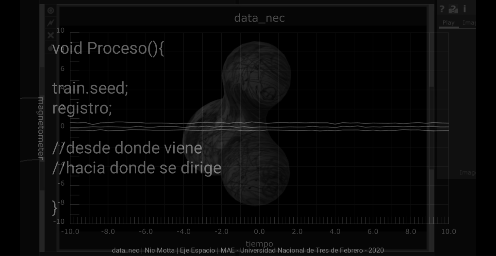
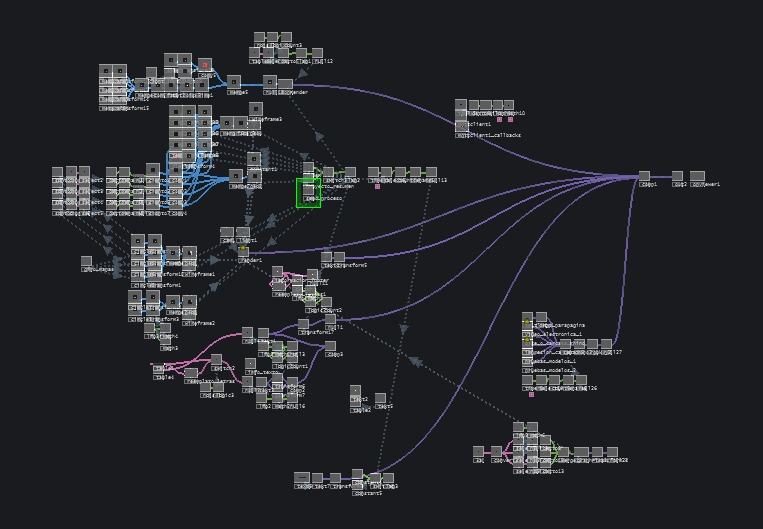

data_nec es un clon de mi mismo. Capaz de comunicarse textual y sonoramente a través de mezclas de sonidos y corporizarse en una estructura digital / exoesqueleto derivada de datos procesados.
En su núcleo funcionan varias inteligencias artificiales entrenadas con una base de datos dinámica que contiene: mi información personal, sensados de mi cuerpo, imágenes y videos de mis procesos de obra y registros de mis movimientos, como también recuerdos y anécdotas relatados por amigos y familiares. Mi ser se convierte así en un ser digital. El pensarme como número hace que me plantee ¿De qué manera manejar esos números? ¿Es posible manipular mi existencia? ¿Tendré el control sobre mi yo digital?
Los recientes avances en el machine learning >> redes neuronales y su fácil acceso a ellas posibilita procesar grandes cantidades de información, sobre todo en bancos de datos, como lo es el data_nec.
Es por esto que aplicando las posibilidades de estas inteligencias artificiales decido crear un clon basado en mi información personal. Una de las cosas que entendí es que es imposible situarme en el mundo como individuo aislado, cuando en realidad el entorno influye directamente. Un dato solitario no es útil, los cómputos incluyen cantidades importantes para llegar a certezas.
El proyecto data_nec, que deriva de [sistema_innatural_1] es el comienzo de un proceso que continuará más allá del eje espacio de la MAE. Ampliando cada vez más la base de datos y por lo tanto mejorando la interactividad entre el clon y yo. Pensando en una etapa próxima con la presencialidad y la robótica, puedo imaginar dispositivos que me permitan dialogar e interactuar con data_nec de manera directa y física, posibilitando la transferencia de datos biométricos. Pudiendo tener conexión no solo numérica, sino también personal y emocional.